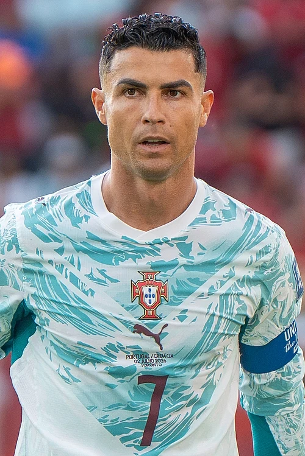

Cristiano Ronaldo dos Santos Aveiro (sinh ngày 5 tháng 2 năm 1985) là một cầu thủ bóng đá chuyên nghiệp người Bồ Đào Nha, hiện đang chơi ở vị trí tiền đạo và là đội trưởng của câu lạc bộ Al-Nassr thuộc Giải Vô địch Quốc gia Saudi Arabia và đội tuyển quốc gia Bồ Đào Nha.
Được mệnh danh là CR7, anh được đánh giá rộng rãi là một trong những cầu thủ vĩ đại nhất trong lịch sử, đã giành được nhiều giải thưởng cá nhân trong suốt sự nghiệp của mình, bao gồm 5 giải Quả bóng vàng, kỷ lục 3 giải Cầu thủ xuất sắc nhất năm của UEFA và 4 giải Chiếc giày vàng châu Âu.
Anh đã 5 lần được FIFA bầu chọn là cầu thủ xuất sắc nhất thế giới.

Sau khi gây ấn tượng với Sporting khi chơi cho các đội trẻ của họ , Ronaldo được huấn luyện viên László Bölöni đưa lên đội một . Vào ngày 14 tháng 8 năm 2002, ở tuổi 17, Ronaldo đã chơi trận đấu chính thức đầu tiên cho đội một, trong vòng loại UEFA Champions League gặp Inter Milan. Trận ra mắt Primeira Liga của anh diễn ra một tháng sau đó gặp Braga , và vào ngày 7 tháng 10, anh ghi hai bàn thắng vào lưới Moreirense trong chiến thắng 3–0 của Sporting. Sau khi Sporting đánh bại Manchester United 3–1 trong một trận giao hữu vào ngày 6 tháng 8 năm 2003, huấn luyện viên của United, Alex Ferguson, đã quyết tâm chiêu mộ Ronaldo, mô tả anh là "một trong những cầu thủ trẻ thú vị nhất" mà ông từng thấy.
Manchester United
Real Madrid
Juventus
Trở lại Manchester United
Al-Nassr
| Sporting Lisbon | Manchester United | Real Madrid | Juventus | Manchester United | Al-Nassr |
|---|